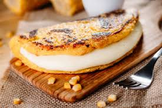

Recipe to make cachapas

Venezuelan cachapas are the first cousins of arepas and although they are
quite similar, there are substantial differences in the way they are made.
Arepas are a dough that only requires pre-cooked corn flour, water and
salt, while cachapas also contain cooked sweet corn kernels and are
juicier.
Ingredients
- sweet corn
- Medium egg for the dough
- milk
- precooked corn flour
- butter
- guayanes cheese
Steps
- In a food processor or blender glass, mix the milk, egg and cooked
sweet corn and blend well until you obtain a dough that is as smooth
as possible.
- Add the flour and butter and blend until completely integrated and
then rest the dough in a bowl covered with plastic wrap for
approximately half an hour.
- After that time, heat a frying pan over medium heat with a little
butter. When it melts, add a ladle of the dough to fill the pan.
- We cook it over medium heat until bubbles appear and it completely
separates from the pan. With the help of a spatula we turn it over.